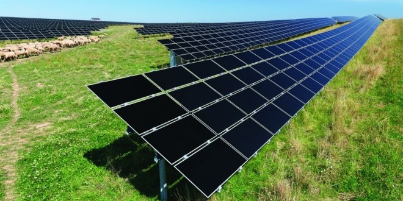

Single crystal solar panels are one of the most expensive at a price of about $4-$6 per watt average. The cost of solar panels like this is high, but since they produce more power, it could very well be worth it.

Poly crystal solar panels are slightly less efficient but cost a little less at a price of about $3-$5 per watt average. The cost of solar panels like this is typically lower, but you'll lose some efficiency.
Thin film solar panels are less efficient, require more space, but are more flexible and can be mounted easily on roofing tiles or shingles. These are the least expensive solar panels available at a price of about $2-$4 per watt average. The cost of solar panels like this would be the lowest, but you'll lose even more efficiency and have to use more of them.